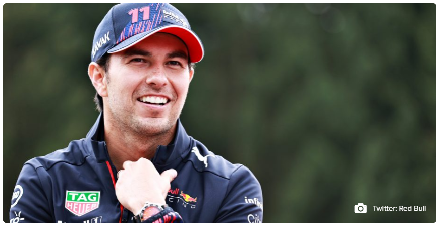

Los terminó convenciendo: Sergio Pérez estiró su contrato con Red Bull por todo el 2022 en Fórmula 1
Deportes-Formula 1

El anuncio entre la escudería austriaca y el piloto mexicano se hizo oficial en medio del Gran Premio de Bélgica, duodécima jornada de la temporada 2021 en la máxima categoría del automovilismo. Su victoria en Azerbaiyán y grandes actuaciones a lo largo de la temporada terminaron convenciendo a Red Bull. Finalmente Sergio “Checo” Pérez seguirá siendo piloto de la escudería austriaca, por todo lo que resta del 2021, pero además en la temporada 2022. Así lo confirmaron este viernes desde Red Bull en medio de las prácticas del Gran Premio de Bélgica, duodécima carrera de la temporada. “Estoy muy feliz de continuar con un gran equipo como Red Bull en la nueva era de Fórmula 1 y es una gran oportunidad para mí”, dijo Sergio Pérez. El mexicano recibió las palabras de apoyo valoración por parte del máximo responsable del escudería de bebidas energéticas: “‘Checo’ es un miembro del equipo muy respetado y su experiencia y habilidad en las carreras son invaluables mientras luchamos por el Campeonato de Constructores”, comentó Christian Horner. En lo mismo, su compañero de equipo, el holandés Max Verstappen sostuvo que “es genial que Checo esté con el equipo el año que viene, tenemos una buena relación, así que estoy feliz de seguir trabajando juntos para intentar sumar muchos puntos”, comentó el neerlandés que está luchando el título de la temporada contra el británico de Lewis Hamilton.
Los números de “Checo” Pérez en el 2021
Luego de casi entrar por la puerta de atrás en Red Bull, Sergio Pérez han rendido de manera espectacular desde que debutó con los austriacos. En Baréin fue quinto, misma posición que obtuvo en España. A eso se suma los cuartos lugares que consiguió en Portugal, Mónaco y Austria. Si embargo, ‘Checo’ tocó el cielo con Red Bull en Azerbaiyán. Luego del choque de Max Verstappen y la mala maniobra de Lewis Hamilton, Pérez aprovecho para ganar su primer gran premio junto a los austriacos y logró subirse a lo más alto del podio, ese mismo que alcanzó en Francia (tercero). De momento, con once carreras disputadas, Sergio Pérez está en el quinto lugar de la clasificación general con 104 puntos, cuatro menos que Valtteri Bottas de Mercedes y nueve menos que Lando Norris de McLaren que es el último en subirse al podio general. Sin embargo, los puntos que ha obtenido tiene en llamas a Red Bull (291 pts), quienes están peleando palmo a palmo el mundial de constructores contra Mercedes (303 pts). La hegemonía de los alemanes está en entredicho gracias los austriacos y básicamente gracias al aporte de “Checo”.
Volver al inicio
Atras